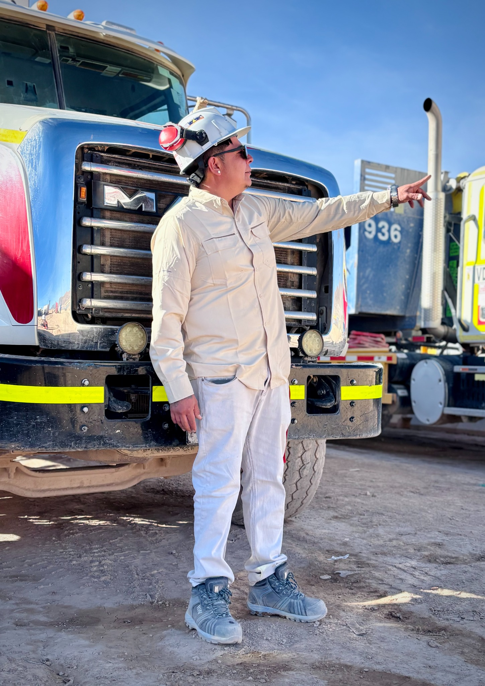
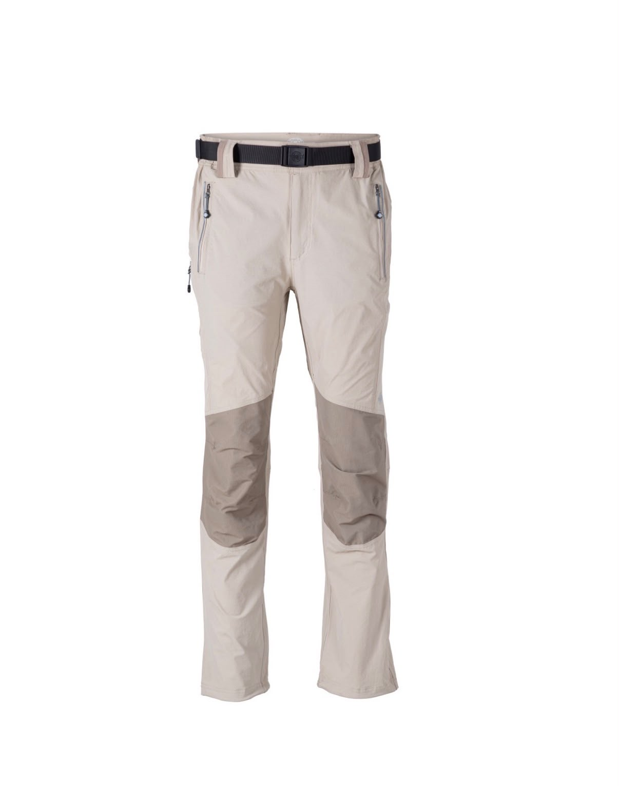
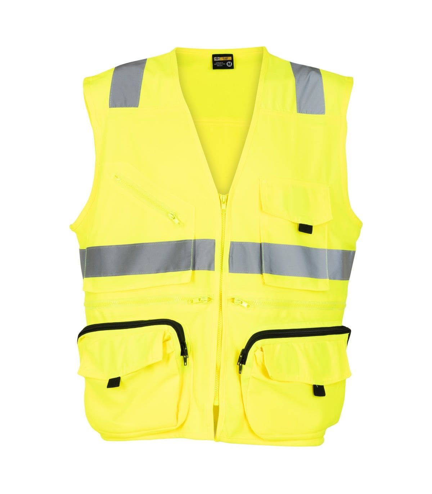
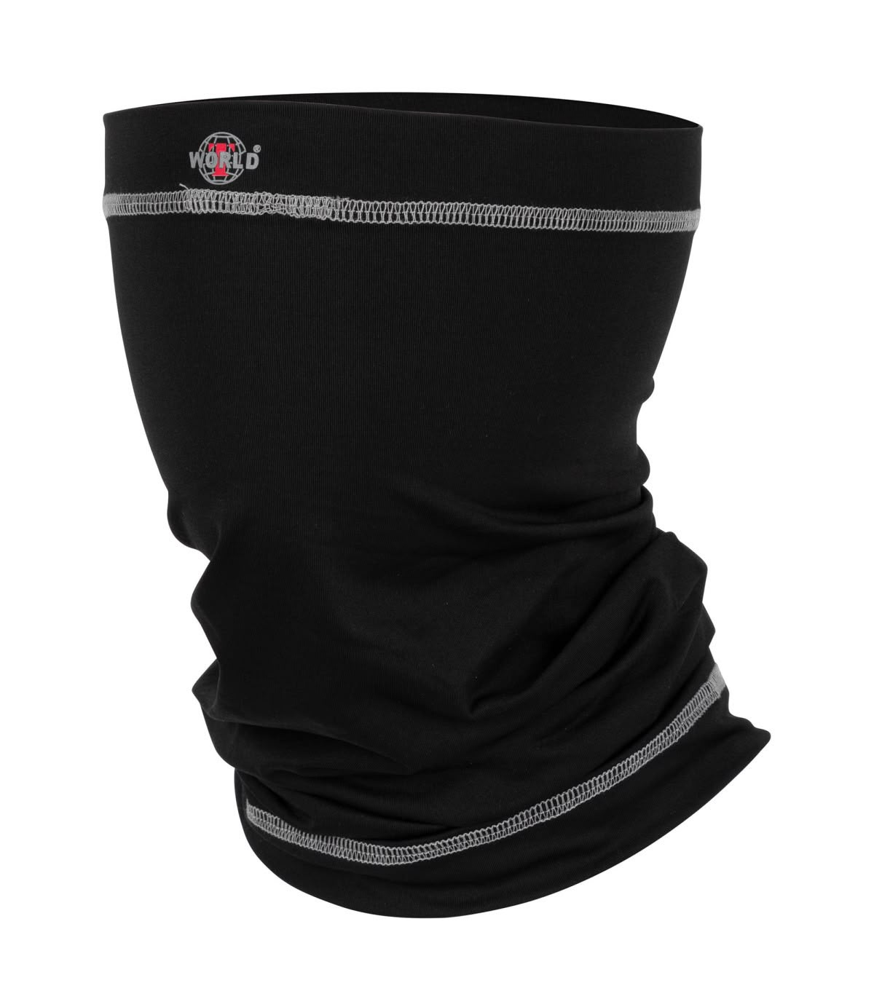
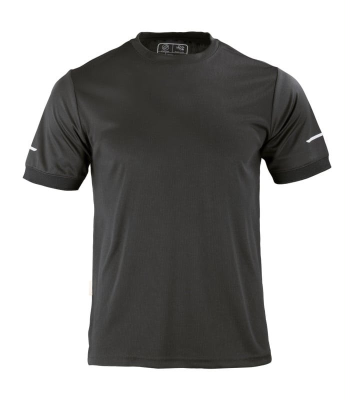

Camisa Ripstop Jubae
Vestuario técnico para uso laboral y faena.
VESTUARIO TÉCNICO · EPP · PERSONALIZACIÓN
Calidad, innovación en textiles y la resistencia que tu equipo necesita.
Soluciones de vestuario para personas y equipos que trabajan en condiciones exigentes.

En ALUVA nos especializamos en el diseño, confección y distribución de ropa de trabajo, vestuario corporativo y Equipos de Protección Personal (EPP). Nacimos para responder a las exigencias reales del sector faenero e industrial, combinando durabilidad, seguridad, comodidad y personalización.
Proveer vestuario técnico, EPP y prendas corporativas de alta durabilidad y funcionalidad, diseñadas para resistir las condiciones más exigentes del trabajo faenero y la vida diaria, integrando personalización de marca y tecnología textil en cada producto.
Ser el referente y aliado estratégico clave en la confección y suministro de ropa industrial, EPP y vestuario personalizado, destacados por la innovación constante en materiales, el diseño a medida y el compromiso con la seguridad y bienestar de nuestros usuarios.
Vestuario técnico y elementos pensados para comodidad, resistencia y seguridad.
Mostrando 9 productos.
Vestuario técnico para uso laboral y faena.

Prenda resistente para condiciones de trabajo exigentes.

Pantalón técnico pensado para comodidad y resistencia.

Alta visibilidad para labores en terreno.

Vestuario de alta visibilidad para faena.

Accesorio funcional para actividades de terreno.

Complemento de protección para trabajo en exterior.

Prenda cómoda para uso diario y corporativo.

Abrigo cómodo para uso laboral y cotidiano.
Diseñamos y personalizamos prendas con la identidad de tu empresa o según tus gustos personales.
Diseña o personaliza tu prenda“Equipar a nuestra cuadrilla con ALUVA ha sido un gran acierto. La calidad de las parkas y chaquetas resiste perfecto las condiciones de la faena, y la personalización del logo de la empresa quedó impecable.”
“Mandé a personalizar unas prendas para mi trabajo de terreno y la atención fue increíble. Excelente confección, la ropa es muy cómoda y los detalles se notan de inmediato. 100% recomendados.”
¿Necesitas vestuario para tu equipo o quieres personalizar una prenda? Contáctanos por nuestros canales.
Dirección: Tornamesa 42, Los Andes.
Correo: aluva.seguridad@gmail.com
Instagram: @aluva.outdoor
TikTok: @aluva.outdoor
¿Prefieres una atención inmediata? Escríbenos directamente:
Chatear en WhatsApp